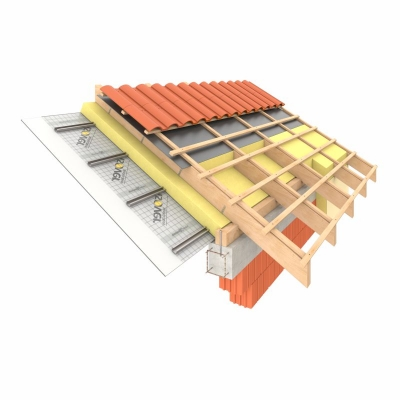

https://www.isover.pl/welny-do-izolacji-poddaszy-i-stropodachow
Izolacje akustyczne i termiczne dachów skośnych - poddaszy użytkowych i nieużytkowych Specjalizujemy się w produkcji materiałów ociepleniowych wykorzystywanych przy izolacji dachów skośnych, wszelkiego rodzaju poddaszy. W przypadku termoizolacji bardzo wiele zależy od samej budowy zadaszenia – montowanie systemu ociepleń jest tym trudniejsze, im bardziej skomplikowana konstrukcja. Mimo wszystko dotarcie do małych powierzchni jest możliwe przy użyciu materiałów izolacyjnych o mniejszej grubości, głównie wełen skalnych i szklanych. ISOVER – producent materiałów ociepleniowych do izolacji nakrokwiowej Zapewniamy bogaty wybór towarów służących do ocieplenia poddasza oraz dachu skośnego. Prezentujemy wysokiej jakości asortyment zapewniający kompleksową ochronę budynku, zmieniając go w dom energooszczędny. Do szczelnego wypełnienia przestrzeni poddasza polecamy wełnę mineralną szklaną, która skutecznie zatrzymuje ciepło za sprawą znakomitych właściwości termicznych. Łatwość i komfort montażu zawdzięczamy dużej sprężystości wełen w rolkach ISOVER. Można znaleźć u nas również wiele produktów umożliwiających panowanie nad wilgocią i zdrowym mikroklimatem. Zapraszamy do zapoznania się z ofertą.
SUPER-MATA
L = 0.033
Mata z wełny mineralnej otrzymanej z włókien
szklanych o doskonałych właściwościach izolacyjnych.
Szybki montaż – nie wymaga sznurkowania.
PROFIT-MATA
L = 0.035
Mata z wełny mineralnej otrzymanej z włókien szklanych o wysokich
właściwościach izolacyjnych.
Szybki montaż – nie wymaga sznurkowania.
AKU-PŁYTA
Izolacja akustyczna:
- lekkich ścian działowych
- sufitów podwieszanych
- okładzin i obudów ściennych
Izolacja termiczna:
- ścian murowanych warstwowych
- ścian osłon o konstrukcji szkieletowej
- ścian osłonowych hal jako wypełnienie profilowanych blach i kaset
- podłóg na legarach
Aku-Płyta dostępna jest w płytach o grubości 50, 75, 100 mm i szerokości 600 mm, co odpowiada standardowemu rozstawowi oraz wysokości profili systemów suchej zabudowy. Dodatkowo, Aku-Płyta występuje w grubości 120 i 150 mm, co pozwala na jej uniwersalne zastosowanie np. w podłogach na legarach, halach itp.
